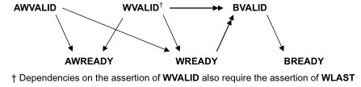
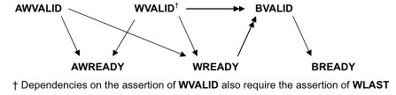

Interview 20
The interview can be viewed in google photos at the link.
Axi
Axi3 vs axi4
-
AXI3 supports burst lengths up to 16 beats only. While AXI4 supports burst lengths of up to 256 beats.
-
AXI3 supports write interleaving. AXI4 does NOT support write interleaving
-
AXI3 supports locked transfers, AXI4 does NOT support locked transfers
-
AXI4 supports QoS (Quality of Service), AXI3 does NOT support QoS.
-
AXI4 supports optional 'USER' signals. AxUSER, WUSER, RUSER, BUSER. These can be used as sideband signals to pass user defined data from end2end. The protocol does not define the use of these signals, so the users have to be careful to use it in a 'local' env, without the expectation that any standard IP would.
- Support them
- Support them for the same intended purpose.
-
AXI4 supports Regions. AxREGION signals. These are region identifier signals sent as AWREGION or ARREGION. These can be max 4 bits wide identifying up to max 16 different regions. These can be used by a single slave to have multiple decode regions.
-
You can also see at times that AXI4 Slave may not have WID signal. The WID always has to match corresponding AWID and in absence of write-interleaving support in AXI4, the information on WID becomes redundant. Hence you may see AXI4 Slaves and even Masters for that matter without the WID signal. In fact in AXI4 and for that matter in AXI5, the WID signals cam be completely ignored.
Many IP providers e.g. Synopsys supporting burst lengths up to 256 beats in AXI3 Many IP providers e.g. Synopsys NOT supporting write interleaving in AXI3.
Looks like the industry norm is to use AXI3 with burst lenghts up to 256 beats without support for write Interleaving.
Out of order
In AXI, a transfer is not completed until the bus master receive the response from the read data channel or write response channel. Also after a bus master issue a transfer, it can issue another transfer without waiting for the first one to complete. If the order of the responses coming back from the slaves arrived in different order from the order that the transfers were issued, we can call it out of order completion.
The order transactions are sent and the order the responses were received is not same.
Outstanding
When master initiates a transaction without waiting it to complete, it can issue next transaction.
Responses
| xRESP[1:0] | Responses |
|---|---|
| OKAY | Normal access success. |
| EXOKAY | Exclusive access okay. |
| SLVERR | Slave error. Used when the access has reached the slave successfully, but the slave wishes to return an error condition to the originating master |
| DECERR | Decode error. Generated, typically by an interconnect component, to indicate that there is no slave at the transaction address |
Exclusive transfer - mechanism
- Exclusive accesses are a sequence of read transactions followed by write transactions to the same address range.
- The exclusive write access of the master is signaled as successful if no other master has written to that location between the read and write accesses, failed if another master has written to that location between the read and write accesses. In this case the address location is not updated.
Exclusive access restrictions
- The burst size and burst length of an exclusive write with a given ID must be the same as the burst size and burst length of the preceding exclusive read with the same ID.
- The address of an exclusive access must be aligned to the total number of bytes in the transaction, that is, the product of the burst size and burst length.
- The addresses for the exclusive read and the exclusive write must be identical.
- The ARID value of the exclusive read must match the AWID value of the exclusive write.
- The control signals for the exclusive read and exclusive write transactions must be identical.
- The number of bytes to be transferred in an exclusive access burst must be a power of 2, that is, 1, 2, 4, 8, 16, 32, 64, or 128 bytes.
- The maximum number of bytes that can be transferred in an exclusive burst is 128.
- In AXI4, the burst length for an exclusive access must not exceed 16 transfers.
- The value of the AxCACHE signals must guarantee that the slave that is monitoring the exclusive access sees the transaction. For example, an exclusive access must not have an AxCACHE value that indicates that the transaction is Cacheable.
Types
- An Exclusive Read can be followed by Normal Read or Write operation.
- A master might not complete the write portion of an exclusive operation.
- An Exclusive Read can follow an Exclusive Read with same ARID value as previous exclusive read and reset the monitor to a different address location.
- There can be two Exclusive Reads monitoring the same address region.
- An exclusive read/write to a slave which does not support Exclusive access.
When exclusive fails, that location will not be updated
Awlock
| AxLOCK[1:0] | Access type |
|---|---|
| 0b00 | Normal access |
| 0b01 | Exclusive access |
| 0b10 | Locked access |
| 0b11 | Reserved |
Locked transfer - diff with exclusive
AxLOCK signals are used by the Masters for a locked access to a slave and it's the arbiter/interconnect which takes care of the AxLOCK signal. The interconnect much ensure that only the master is allowed access to the slave until an unlocked transfer from the same master completes.
When both are asserted who has the preference
need to look up
Interleaving
- With write data interleaving, a slave interface can accept interleaved write data with different AWID values.
- The write data interleaving depth is the number of addresses for which a slave can accept interleaved data.
- When accessing a slave that supports write data interleaving, write data from different transactions that use the same AWID cannot be interleaved.
Axi handshake
All five transaction channels use the same VALID/READY handshake process
Types : VALID before READY | VALID after READY | VALID with READY
 


| Def | Elaboration |
|---|---|
| Write strobe | a byte lane strobe signal for every eight data bits, indicating which bytes of the data are valid. |
| Narrow transfer | In incrementing or wrapping bursts, different byte lanes are used on each beat of the burst. In a fixed burst, the same byte lanes are used on each beat. |
| Unaligned transfer | Use the low-order address lines to signal an unaligned start address. Provide an aligned address and use the byte lane strobes to signal the unaligned start address. |
Out of order testcase
Coverage in axi
need to look up
UVM
| Advantages | DisAdvantages |
|---|---|
| 1. Modularity and Reusability | 1. Steep Learning Curve |
| 2. Separating Tests from Testbenches | 2. Still in development |
| 3. Simulator independent | 3. Too many Functions and Tasks |
| 4. Sequence based Stimulus generation | 4. Overkill for small agents |
| 5. Configuration mechanisms | 5. Bottleneck - lot of code to create TB |
| 6. Factory mechanisms | |
| 7. Plug and Play | |
| 8. Bidirectional | |
| 9. Phasing mechanisms |
| Copy | Clone | Create |
|---|---|---|
| The copy makes this object a copy of the specified object. | The clone method creates and returns an exact copy of this object. | The create method allocates a new object of the same type as this object and returns it via a base uvm_object handle. |
| The do_copy method is the user-definable hook called by the copy method. | The default implementation calls create followed by copy. As clone is virtual, derived classes may override this implementation if desired. | Pure virtual class. Hence, every class deriving from uvm_object, directly or indirectly, must implement the create method. |
uvm_object
| SEEDING | IDENTIFICATION | CREATION | PRINTING | RECORDING |
|---|---|---|---|---|
| use_uvm_seeding | set_name | create | record | |
| reseed | get_name | clone | sprint | do_record |
| get_full_name | do_print | |||
| get_inst_id | convert2string | |||
| get_inst_count | ||||
| get_type | ||||
| get_object_type | ||||
| get_type_name |
| COPYING | COMPARING | PACKING | UNPACKING | CONFIGURATION |
|---|---|---|---|---|
| copy | compare | pack | unpack | set_int_local |
| do_copy | do_compare | pack_bytes | unpack_bytes | set_string_local |
| pack_ints | unpack_ints | set_object_local | ||
| do_pack | do_unpack |
Agent Mode
The int configuration parameter is_active is used to identify whether this agent should be acting in active or passive mode. This parameter can be set by doing:
uvm_config_int::set(this, "<relative_path_to_agent>, "is_active", UVM_ACTIVE);
get_is_active() returns UVM_ACTIVE if the agent is acting as an active agent and UVM_PASSIVE if it is acting as a passive agent.
Starting a test
A particular test case can be selected and execute on two methods,
- by specifying the test name as an argument to run_test();
- example:
run_test("mem_model_test");
- example:
- by providing the UVM_TESTNAME command line argument
- example:
<SIMULATION_COMMANDS> +UVM_TESTNAME=mem_model_test
- example:
- run_test( ) within tb_top as shown above, is a global task which is responsible for getting a reference to the uvm_root class instance from UVM core services.
- There is another run_test( ) method within uvm_root to
- phases all components through all registered phases.
- initialize factory settings
- report servers
- do basic level checks
Pre and post body in a Sequence
The *_body() callbacks are designed to be skipped for child sequences, while *_start() callbacks are executed for all sequences.
virtual task start (
uvm_sequencer_base sequencer, // Pointer to sequencer
uvm_sequence_base parent_sequencer = null, // parent sequencer
integer this_priority = 100, // Priority on the sequencer
bit call_pre_post = 1 // pre_body and post_body called
);
Seq arbitration
seqr.set_arbitration(); Specifies the arbitration mode for the sequencer.
function void set_arbitration(
UVM_SEQ_ARB_TYPE val
)
| Arbitration | Order |
|---|---|
| UVM_SEQ_ARB_FIFO (default) | Requests are granted in FIFO order |
| UVM_SEQ_ARB_WEIGHTED | Requests are granted randomly by weight |
| UVM_SEQ_ARB_RANDOM | Requests are granted randomly |
| UVM_SEQ_ARB_STRICT_FIFO | Requests at highest priority granted in FIFO order |
| UVM_SEQ_ARB_STRICT_RANDOM | Requests at highest priority granted in randomly |
| UVM_SEQ_ARB_USER | Arbitration is delegated to the user-defined function, user_priority_arbitration. That function will specify the next sequence to grant. |
Exclusive access for the seqr
different from m and p seqr so need help might be lock
| m_sequencer | p_sequencer |
|---|---|
| generic uvm_sequencer pointer | typed-specific sequencer pointer |
| initialized when the sequence is started | you would need to typecast the m_sequencer to the physical sequencer |
| a handle of type uvm_sequencer_base which is available by default in a sequence | created by registering the sequence to the sequencer using macros.It will not exist if we have not registered the sequence with macros |
Default sequencer
- m_sequencer, available in any sequence, is the default sequencer
- A specific sequencer can be set using
uvm_sequence_item::set_sequencer()in sequence_itemcreate_item( ..., .l_sequencer(seqr))in sequence
Sequencer - Driver Interactions
get_next_itemandgetwill retrieve the next available item from a sequence. The call will block until an item is available.try_next_itemwill try to retrieve if available, if not returns immediatly with request set to null object.peekwill retrieve the present availabe item from a sequence. The call will block until an item is available.- Once a request item has been retrieved and is in the sequencer FIFO, subsequent calls to peek will return the same item.
- The item will stay in the FIFO until either get or item_done is called.
The following steps occur on these calls:
| No. | Retrieves the next available item from a sequence |
|---|---|
| 1 | Seq Arbitration |
| 2 | return from wait_for_grant in sequence |
| 3 | Randomizaion |
| 4 | Indicate item_done to the sequencer (only in get) |
| 5 | return with a reference to the item |
item_done will :-
- Indicates that the request is completed to the sequencer.
- Any uvm_sequence_base::wait_for_item_done calls made by a sequence for this item will return.
- The current item is removed from the sequencer FIFO.
- If a response item is provided, then it will be sent back to the requesting sequence.
- The response item must have its sequence ID and transaction ID set correctly, using the uvm_sequence_item::set_id_info
Factory
Using the factory involves three basic operations
- Registering objects and components types with the factory
- Designing components to use the factory to create objects or components
- Configuring the factory with type and instance overrides, both within and outside components
| new | create |
|---|---|
| SV | Factory - UVM |
| class constructor which is used to create an instance of a class | factory method that is used to create the instances of uvm components & objects with the help of class constructor |
| No Factory registeration | Factory can only create the instances of the class which are registered with it |
| No Factory Overriding | Can be overrided |
Cross coverage
- Cross Coverage is specified between the cover points or variables
- Expressions cannot be used directly in a cross; a coverage point must be explicitly defined first
Types of constraints
- Constraint Block, External Constraint Blocks and Constraint Inheritance
- Inside Operator
- Weighted Distribution
- Implication Operator and if-else
- Iterative in Constraint Blocks (foreach constraints)
- Disable Constraint
- Static Constraints
- In line Constraints
- Functions in Constraints
- Soft Constraints
- Unique Constraints
- Bidirectional Constraints
- Solve-Before
Interface: modport & clockingblock
Clocking Block
A clocking block must be part of a module or interface.
| Nomenclature | Use |
|---|---|
| clocking event : provides a synchronization reference for DUT and testbench | this part is what enables us to avert race conditions |
| clocking signals : to be sampled and driven by the testbench | can be any type: nets and variables |
| clocking skew : the timing, relative to the clock event, that the testbench uses to drive and sample those signals | inputs must not have #0 delay, outputs can |
| clockvar: cb.signal; not a signal | should only be used with nb assignment <= |
Uses:
- Cycle oriented
- Decoupling Testbench from Signal Details
@(posedge clk)becomes@cb
- Assuring Race-free Reading of Input Clockvars
cb.clockvarbetter accessed@cbrather than@(posedge clk)
- Features:-
- Inactive-Edge Skew Ex:
output negedge some_signal default clocking any_name@(posedge sysclk); endclocking
- Inactive-Edge Skew Ex:
ModPorts
- groups and specifies the port directions to the wires/signals declared within the interface
- declared inside the interface with the keyword modport.
- can contain clocking block
- can be made virtual
@ev | wait(ev.triggered) |
|---|---|
| @ statement should be executed before the trigger | wait can be executed before or after the trigger (but in same time slot) |